Node-red point layer to world map¶
Deploy the Node-red service¶
Deploy the Nginx and Hugo Watcher services¶
To deploy the initial stack, which includes the Nginx and Hugo Watcher services, please run either make configure-ssl-self-signed or make configure-letsencrypt-ssl.
Deploy the Postgres and PostGIS service¶
Next, deploy the Postgres and PostGIS service using make deploy-postgres. If you already have PostgreSQL already installed outside of the stack on your local machine, ensure that you specify a different Postgis Public Port number other than the default port, 5432. For example, you can use the port 5434.
Import the Node-RED example data into the gis database¶
In this workflow we will be creating a flow that get points and some data for each point from a table in a Postgres database, and pushes them through to the world map dashboard in Node-RED, to create a web map based on live data in the database.
The data we will be using in this workflow is the air quality data for capital cities around the world for different dates. The world capitals data is obtained from Simplemaps.com and the air quality data is obtained from Weather API). To import the example data into the gis database, run the following command make add-node-red-example-data. To verify that the data has been imported, create a psql shell using make db-psql-shell and run \dn; in the psql shell. The gis database should now contain the weather-data-schema and the world_air_quality_schema schemas as seen below:

The world_air_quality_schema should contain the following tables:
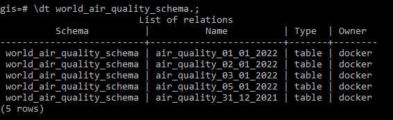
Deploy the Node-RED Service¶
Deploy the Node-RED service using make deploy-node-red. To add the node-red-contrib-postgres-multi package to Node-RED, run make deploy-node-red-patch then restart the service using make restart-node-red.
Accessing the Node-RED Service¶
The Node-RED service can now be accessed on /node-red/ e.g. https://localhost/node-red. Use the NGINX_AUTH_USER and NGINX_AUTH_PWD specified in the .env file to sign in into the Node-RED editor.
Create the Flow¶
Install the non-default nodes¶
To get started, we will first install the worldmap node, which is not available by default in Node-RED. In the Header section of the Node-RED Editor, click on the main menu and select the Manage Palette option.
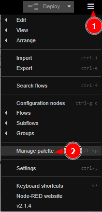
Under the Palette tab of the User Settings dialog click on the Install tab. Search for the node-red-contrib-web-worldmap module using the search bar and install it by clicking the install button. Install the node-red-dashboard module in the same way. Once the modules have been installed, close the User Settings.
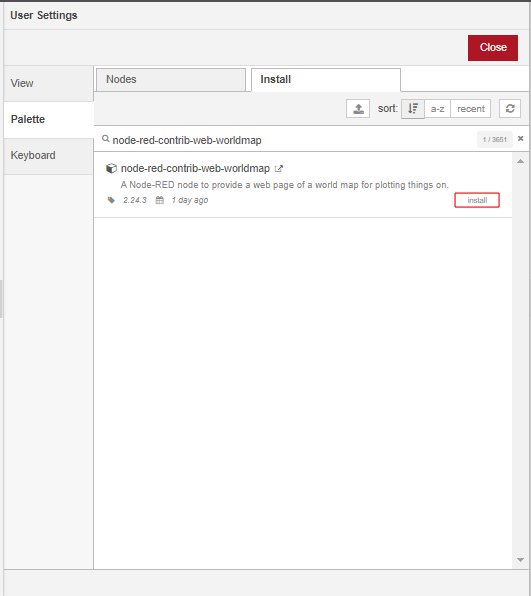

Obtain dates for which data is available¶
Add nodes to workspace¶
Drag and drop an inject node, 2 function nodes, a postgres node, a dropdown node and a debug node from the palette on the left of the workspace, onto the workspace.

Connect to the gis database¶
To configure the postgres node to connect to a database, double click on the first postgres node. This will open the node’s Edit dialog. Click on the pencil icon next to the Server Properties input box and specify the following properties:
| Property | Input |
|---|---|
| Host | db |
| Port | 5432 |
| Database | gis |
| Username | docker |
| Password | <POSTGRES_PASSWORD> |
Use the POSTGRES_PASSWORD specified in the .env file. Please ensure you have enabled SSL by checking Use SSL. Once your done with the configuration click on Add. In the Name input box specify the name of the node as db, check the Receive query output? box, then click on Done.
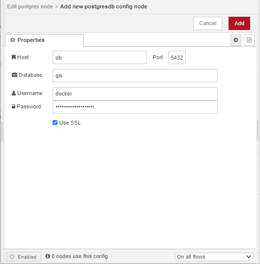
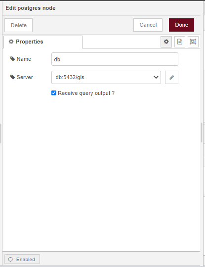
Query the gis database to get dates¶
There are five tables in the world_air_quality_schema schema. Each table has the air quality data for the world’s capital cities observed on a specific date.
We will use the first function node to query the gis database we have connected to using the postgres node, to get the dates for which the data is available.

To query the database we will need to assemble the following SELECT query: SELECT replace(table_name, 'air_quality_', '') FROM information_schema.tables WHERE table_schema='world_air_quality_schema' AND table_type='BASE TABLE' AND table_name LIKE 'air_quality_%'; (adapted from here) as an array of objects on msg.payload using the function node. For more information on how to construct the above SELECT statement see:
Double click on the function node to open the Edit dialog. Configure the function node as shown in the image below then click on Done.

Display the dates in the drop down menu¶
To display the dates that data is available from the world_air_quality_schema schema in a drop down menu on the Node-RED dashboard, we will need to pass the dates as a list from the postgres node to the dropdown node. To do this, we will use the second function node to convert the msg.payload from the postgres node from an array to a list.

This is done using the JavaScript Array forEach() and push() methods.
Double click on the second function node to open the Edit dialog. Configure the function node as shown in the image below then click on Done.
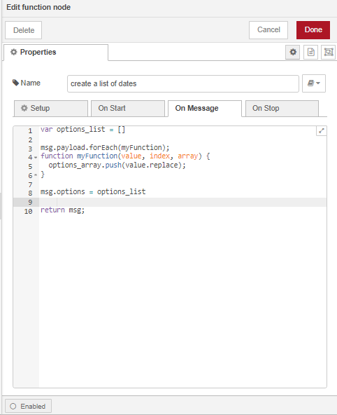
To display the list of dates in a clickable drop down menu we will configure the dropdown node. Double click on the node to open the Edit dialog. Click on the pencil icon next to the Group input box and edit the Group properties as follows:
Add a new dashboard tab called
Air Quality: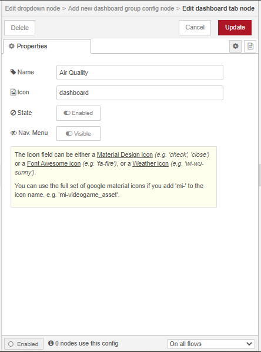
Name the group that the dashboard table will be assigned to as
Select Date:

Set the label as Select Date but leave the rest of the dropdown node’s properties as default and click on Done.

Connect the nodes in the flow as follows, click on Deploy then click on the inject node to manually trigger the flow:

The Node-RED dashboard display can now be accessed on /ui/ e.g. https://localhost/ui.
As seen in the image below, we now have a dropdown menu on our dashboard that allows us to select a date of interest to view the air quality data stored in the tables in the world_air_quality_schema schema for that specific date.

When we select a date from the dropdown menu, the dropdown node passes the date as the msg.payload to the debug node which displays the msg.payload on the debug console.
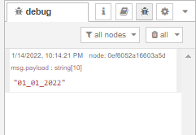
Query database to get data for selected date¶
We will now use the date in the msg.payload from the drop down node to query the gis database to retrieve the air_quality table for that date.
Display air quality data for the date selected on the world map¶
In this step of the flow, we will display the air quality data for the world’s capital cities for the date selected on the world map.
Query the database using the selected date¶
Using a function node and a postgres node, we will use the date selected from the drop down menu (the msg.payload) to get the air quality table data for that specific date.
Add the 2 nodes and connect them as follows:

Label and Configure the function node as follows:

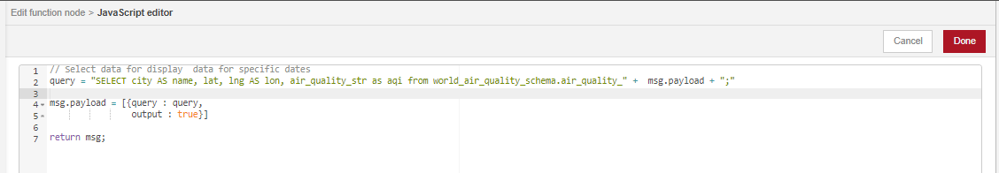
For the postgres node, we will only set the Name property and check the Receive query output? box. The sever properties will by default, be the properties we configured in the first postgres node.

We can connect our postgres node to the debug node at this point and deploy the flow to check if our flow is working correctly. After manually triggering the flow using the inject node and selecting a date from the drop down menu, our debug console should have an output similar to this:

Display the selected data on the world map¶
The table below shows the colours used to display the different Air Quality Index levels of concern. We will use these colours to display the air quality data on the world map.
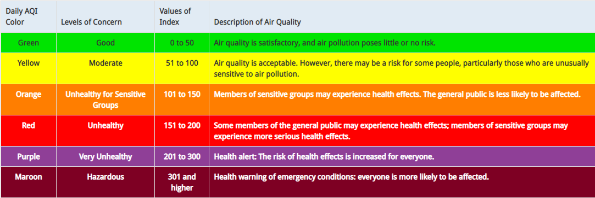
Image Courtesy of AirNow.
We will assign a map icon and and a map icon colour to each element of the msg.payload array from the previous section using a split node, a function node and a join node. The split node splits the message into individual array elements, the function node allows us to assign the map icon and map icon color message properties to each element, then the join node recombines the individual elements back into a single array.

Use the default configuration for the split and join nodes and configure the function node as follows:

After deploying our flow, we can see the icon and iconColor properties have been added to each individual element of the msg.payload array.

To display the data on the worldmap, add the worldmap node  from the dashboard category onto the workspace and connect it to the join node.
from the dashboard category onto the workspace and connect it to the join node.
Double click on the node to open the Edit dialog. For the Group properties, add a new group called Display Air Quality Data to the Air Quality Dashboard Tab. Set the map’s start center coordinates 30 degrees latitude and 31 degrees longitude with a start zoom level of 4.

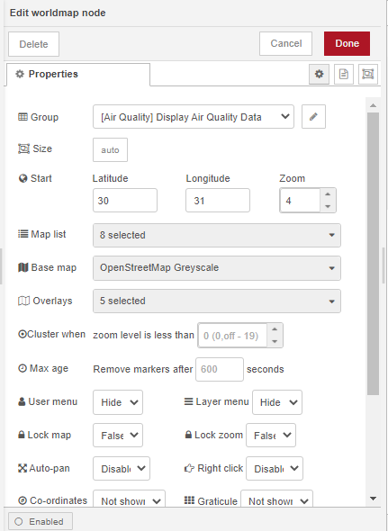
To change the layout of the dashboard, access the dashboard layout sidebar from the drop down menu on the sidebar to the right of the workspace. Click on the layout icon of the Air Quality Dashboard Tab.


Expand the world map.

Deploy and run the flow¶
This is what your flow should look like:

Deploy and manually trigger your flow. On the Node-RED dashboard display, select a date from the drop down menu and view the data on the worldmap.